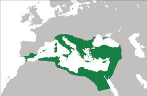
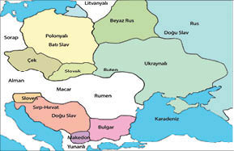

Dilde Bölünen Din: Yunanca ile Latincenin Savaşı
Hıristiyan öğretisi, ilk “milenyum”unu (bin yıl) geride bıraktığında, Avrupa ve Asya’nın büyük bölümünü kucaklayan bir din haline gelmişti.
Batı’da Eski Roma Kilisesi’nin tepesinden Papalar gelip geçiyor, hiçbiri yetki ve makamlarını dayandırdıkları, üstüne devlet kurdukları müthiş sahtekârlığı, Büyük Konstantin’in sahte vasiyetini zamana yaya yaya meşrulaştırmayı unutmuyordu.
Kadim Roma İmparatorluğu’nun meşru mirasçısı Doğu Roma’da ise Konstantinopolis Kilisesi’nin, hem kendinden menkul Papalık Devleti hem de Avrupa Hıristiyanlığını hükmüne alan Papalara karşı beslediği husumet artıyordu.
Hıristiyan âlemine yönderlik mücadelesinde, iki Kilise’yi Büyük Konstantin zamanından beri karşı karşıya getiren pek çok neden vardı.
Görünürde bu nedenlerin hepsi, Hıristiyanlık kavram ve kurallarının çelişkili yorumu ya da ritüel farklılığından kaynaklanıyordu.
Ama ayrıntılardan uzaklaşıp büyük resme bakıldığında, çekişmenin temelinde din değil, dil rekabeti görünüyordu!
Latince İncil ile Yunanca İncil’in mücadelesiydi bu.
Roma İmparatorluğu’nun Avrupa’da çöküşünden sonra Doğu’da süren hükmünde, devletin resmî dili Latince olmakla birlikte halk arasında en yaygın dil, Yunancaydı. Hatta bizzat eski Romalı soylular, seçkinlik göstergesi olarak aralarında Yunanca konuşurlardı.
Akdeniz çevresindeki Helenistik mirastan epeyce esinlenen Roma uygarlığının, “Greko Romen” diye anılması boşuna değildir.
Grek dili, Roma İmparatorluğu’nun yayıldığı tüm topraklara, zaten kültürel anlamda devamı olduğu antik Yunan egemenliğiyle birlikte yerleşmişti.
Doğu Roma’nın, örneğin 550 yılında İtalya’dan başlayıp Küçük Asya, Ortadoğu, hatta Mısır’dan dolanarak İspanya’nın güneyine kadar uzanan geniş coğrafyasında; ancak “Babil” efsanesiyle anlatılabilecek kadar kozmopolit nüfusunun kendi arasında anlaşmak için kullandığı ortak dil, Yunancaydı.

550 yılında Doğu Roma / Bizans İmparatorluğu coğrafyası
Zaten İncil’in şimdiye kadar bulunan en eski yazılı örneğinde de Eski Ahit İbranice, Yeni Ahit Yunancadır22.
Büyük Konstantin’in geçici olarak birleştirebildiği imparatorluğun 395 yılından öteye geri dönülmez biçimde bölünmesinden sonra bile Doğu Roma’da hem Latince hem de Yunanca kullanılıyordu. Ne var ki Batı kanadı çöktükten sonra Doğu’da bin yıl daha süren imparatorlukta, 7. yüzyıldan öteye Yunanca ağır bastı, Latince tamamen terk edildi.
Zaten Doğu ile Batı arasında bölünen Romalılar arasındaki mesafe, böylece biraz daha açıldı.
Hıristiyanlığın beş büyük patrikliğinden dördünü kapsayan Doğu Roma Kiliseleriyle, tek patriklik olmasına rağmen tüm Avrupa’ya hâkim Batı Roma Kilisesi arasında, İncil’in Yunanca ve Latince yorumları üstünde zaten yüzyıllardır süren çekişme; önce toplumsal, ardından siyasal ayrılık gerekçesiyle birlikte aracını da oluşturdu.
Greko Romen uygarlığın Batı’daki mirasçıları, din coğrafyasında Latince’nin egemenliğiyle bağımsızlaşırken; Doğu’daki mirasçılar İncil’in özgün dili Yunancayı seçerek Hıristiyanlığın aslına sadakati savunuyorlardı.
Düşünün ki sözünü ettiğimiz zamanlarda gerek Avrupa, gerekse Asya’da pek çok halk vardı ve değişik diller konuşuluyordu.
Ancak ruhban sınıfının bir kutsal kitap üstünden yaptıkları dil kavgası bile, ileriki tarihlerde; zaten ne Yunanca ne de Latince okuma yazması olan, çoğu sadece kendi yerel dilini konuşabilen halklar arasında müthiş kinlere, korkunç savaşlara, kıyımlara yol açtı.
Sonunda, bugün “Batı Avrupa” diye anılan Hıristiyan âlemi, İncil’i hangi dilde okur ve ritüellerini hangi yerel dile uygularsa uygulasın, anadilini Latince kabulle Latin alfabesinde yazılan yorumunu benimsedi.
Latince, Batı Roma’nın hem kutsal hem uygar kökeni sayıldı.
Balkanlar ve Peleponez’den başlayıp Kuzey Avrupa’dan geçerek Asya’ya kadar uzanan Hıristiyan âlemi ise Yunanca İncil’de karar kılarak; hangi dili konuşurlarsa konuşsunlar, Ortaçağ Yunan alfabesi ya da bu alfabeye Slav seslerinin eklendiği Kiril alfabesiyle yazılan bir kutsal kitabın çevresinde saflaştılar.
Doğu Roma’nın kutsal ve uygar kökeni, Yunancaya dayandırıldı.
Bu saptama, dil ögesinin ayırıp birleştirmekte ve toplumsal kimlik belirtmekte din ögesi kadar önemli, hatta yer yer daha bile etkili olabildiğini gösterir.
1000’li yıllarda, İtalya’daki Eski Roma Kilisesi’yle artık Konstantinopolis diye adlandırılan Yeni Roma Kilisesi arasındaki gerilim, Latince İncil ve Yunanca İncil ayrımıyla zirveye ulaşmıştı. Ancak tarafların arasındaki anlaşmazlığın tarihçesi, MS 381’de Konstantinopolis ve 451’de Kadıköy’de toplanan konsiller, yani din kurultaylarında alınan kararlara kadar uzanıyordu.
Neydi bu kararlar? Kısaca anımsayalım:
Eski Roma Kilisesi, tüm Kiliselere öncülük iddiasını, İsa’nın sö-

11. yüzyılda Kiril alfabesi kullanan Slav halklar
züm ona Hıristiyanlık mabedini emanet ettiği havarisi Aziz Petrus tarafından kurulmuş olmasına dayandırıyordu. Oysa Konstantinopolis Kilisesi’nin meşruiyet ve yetkileri, tamamen idari bir resmiyet, yani imparatorluk başkentinde kurulmuş olmasından kaynaklanıyordu. Konstantinopolis Piskoposluğu (Patriklik) 381’deki Konsil’de Roma Piskoposluğuna (Papalık) denk sayılmış ve 451’deki Konsil’de yetki alanı Trakya, Pontus ile Asya’ya kadar genişletilmişti.
Ne var ki Kadıköy’de düzenlenen bu konsilde, Hıristiyan âlemini beş yetki alanına bölen “pentarşi” Kiliselerinin sıralamasında Konstantinopolis, başkent piskoposluğu olarak hepsinin üstüne çıkarılırken; Eski Roma Kilisesi’ne muğlak bir öncelikten de bahis vardı. İşte kıyamet, bu önceliğin biçimsel mi, yoksa eylemsel mi olduğu tartışmasında kopuyordu.
Konstantinopolis Kilisesi, Eski Roma’nın önceliğini salt tarihçesine dayalı protokoler birincilik olarak algılarken; Eski Roma Kilisesi, tüm Hıristiyan âleminin öncülüğü gibi yorumluyordu.
Ama bu öncülük iddiasıyla bile, Doğu Roma İmparatoru’nun makam üstünlüğünü aşamıyordu. Eski Roma, Yeni Roma ve zaten Hıristiyanlık âleminin ruhani “pentarşi hükümeti”ni oluşturan beş yönder Kilise’ye başpiskopos, yani Papa ya da patrik atamak ve azletmek yetkisi, belli bir tahta aitti: Konstantinopolis’teki imparatora.
Eski Roma’nın patrikliği olan Papalık, 8. yüzyılda yoktan var ettiği ve “Büyük Konstantin’in Bağışı” diye sunduğu sahte vasiyet sayesinde de işte bu yetki engelini de aşmıştı ve 11. yüzyıla girildiğinde artık diğer dört Başpatrikliğin üstünde bir “temyiz makamı” olmak iddiasını taşıyordu.
22 Özellikle Yahudi ve İslami odakların İncil’in kök dilinin Aramice olduğu iddiası hem yanlış hem de ideolojik amaçlı bir yalandır. Yunanca Yeni Ahit’te, sınırlı sayıda Aramice bölümler vardır, o kadar.